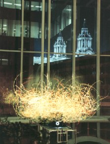
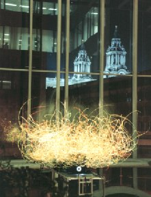
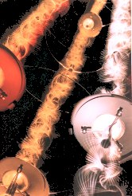
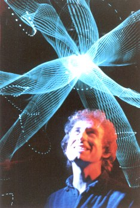

In the summer of 1993 British Telecom commissioned a large fibre optic sculpture which was exhibited in the foyer of their head office in London, as part of the Art in the City project. Located a few hundred metres from St. Paul's Cathedral, at night time BT's vast atrium window was lit up with this strange 'burning bush'. BT wished to show a work made with fibre optic as it was the new telecommunication medium.
This was the first project where I used a computer control system, utilising a PC with a digital to analogue converter and an industrial digital servo system. Software was developed providing a graphic user interface which gave clear and precise control of the system parameters. This made it possible to program long and complex sequences of the light sculpture's activity without any repetition... organised chaos. In 1994 my work was shown at The Light Fantastic exhibition in Walsall, near Birmingham, England, a group show of a selection of British artists currently working in this field. A number of my sculptures were selected for 'Lichtspielereien' a hands on exhibition at Technorama, the major science museum in Switzerland . Some of these works were purchased and are now on permanent display.

 A touch screen computer is used to control The Light Spinner with interactive and non-interactive modes. In the interactive mode, at a touch of the screen, all three 'strings' can be changed to different colours in varying combinations of activity. Left alone the non- interactive mode will start to control the sculpture automatically. This enhances the eye catching quality of the work, insuring that there is always changing activity.
1995 also saw the completion of a smaller piece, Light Wave Three, using the same control system as the Light Spinner. It is a free standing sculpture 2.5 metres tall. It was first exhibited unfinished without a computer in Japan at Artec '95 in where I received a Recommendatory prize. After completion it was shown here in England.
 In 1996 using the computer programming language Delphi, I have written an application, Zip Art which lets you create surprisingly subtle and beautiful images and Visual Music using special drawing tools I have developed. Go to Java Zip to get a taste of what this is all about. Java Zip is an interactive Applet written in the internet friendly programming language, Java. You can try out a selection of the special drawing tools available with Zip Art. On many of the Web site pages you will see small images made with it. In the Picture Gallery you will find larger images drawn with Zip Art. I have in preparation a CD Rom with more information on my light sculptures, a complete working version of Zip Art and an interactive picture gallery with more features and many more images than on the web site version. This will be available free of charge to museums and other commissioning bodies, please contact me for further information.
Paul Friedlander 1997
" THE FUTURE OF ART IS LIGHT " Henri Matisse
You can download a trial version of ZIP ART for Windows free.
Download Now ZIP file format, 800 KB.

home page | Zip Art | gallery guide | visual music